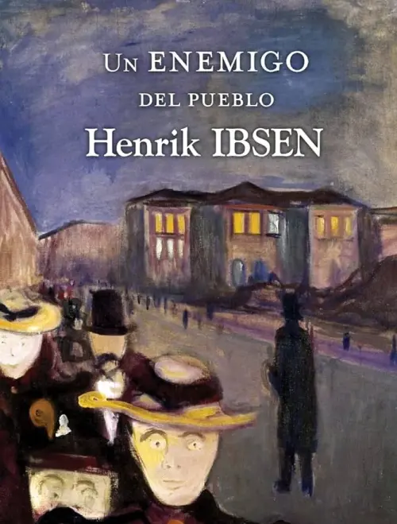

Clásico
Esta sección está dedicada a obras literarias con importancia duradera, siendo ejemplares dentro de su tradición cultural.
Aproveite!
-

Las aventuras de Sherlock Holmes
En los relatos de este libro, Sherlock Holmes muestra su genialidad y razonamiento junto a Watson, formando una pareja célebre de la ficción.
Escucha aquí! -

Un enemigo del pueblo
El protagonista es el doctor Tomas Stockman,
/ Escucha aquí!
quien promueve la creación de un balneario en el pueblo debido a las propiedades saludables de sus aguas.